教育工作者常说：“孩子今天的说话能力，就是日后 阅读和书写能力的基础”。然而，这只说出了情况的一部分。孩子在三岁之前可以通过儿歌和故事加强音韵觉识的能力。三岁之后，已能准备好学习字母及音素的关系了。能掌握字母及音素的关系，也就能加强阅读和书写能力。
要成功地学会阅读英语，孩子必须将词汇转化为发音后再消化。由于英语以字母来表示读音，因此，让孩子学习字母与发音之间的关连相当重要。
“原音拼合法”是其中一种教授两者关连的方法，有助于孩子学习阅读。孩子会学习每个字母的发音，以及字母的不同排列会如何改变词汇的意思。
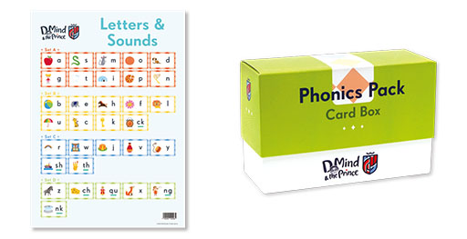
什么是“原音拼合法”？
英语是由 44 个不同发音组成。原音拼合法就是直接教授字母和音素的关系，例如， ch、u、p、sh、i、o、t 等分别代表的音素，又例如，/ i / 音所代表的可能拼写法；然后辅以拼合（blending）和分拆（segmenting） 的训练，例如，训练孩子将 sh-i-p 分别代表的音素拼凑成英文字 ship 的发音，同时训练听到 ship 的发音时，将它分拆成 sh、i、p 所代表的音素。孩子接受过有系统的训练后，便能逐渐掌握朗读和听写生字的能力。
一开始时，本教材会教孩子一种发音的读法，例如，
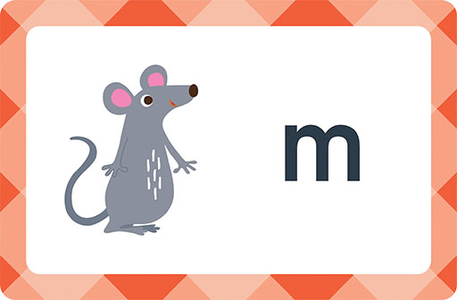
发音卡上有一只老鼠（mouse）和字母“m”，孩子便可练习发“mmm”音；
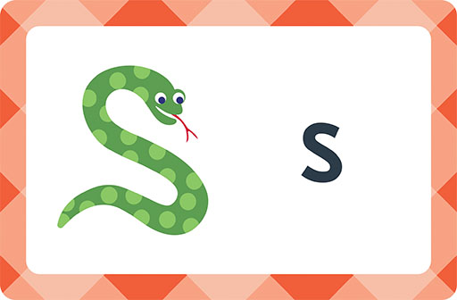
发音卡上有一条蛇（snake）及字母“s”，孩子便可练习发“sss”音；
让孩子将“mmm”与“mouse”、以及“s”与“snake”连结起来迅速发音，并重复尝试，直至能以一定速度读出整组发音，然后练习以更快速度读出。当他们能够迅速读出一些发音时，便可以将这些发音拼合起来组成词汇。父母示范朗读词汇时，不妨以夸张的方式读出。
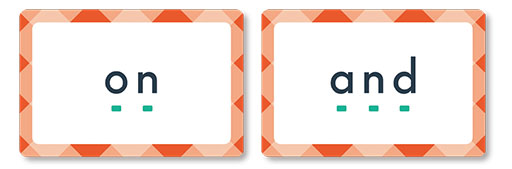
孩子能组合发音后，我们便会展示一些他们可以读的句子。这个步骤都十分重要，因为，当孩子看到会读字母组成的句子便能发现，只要开始学习字母发音，便马上具备阅读能力。
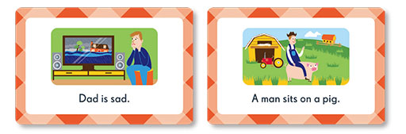
有研究显示，经常阅读的孩子往往在学校表现较佳， 因此，我们希望孩子至六至七岁时，已是一个能流畅阅读的爱书人。
使用方法
下文将详述使用方法，协助家长使用D Mind & the Prince Phonics Pack内的发声挂图、发声卡、词汇卡和句子卡。家长可通过AI笔帮助孩子学习发音，继而让孩子将发音组合成词汇和阅读句子。
套件内的资源包括：
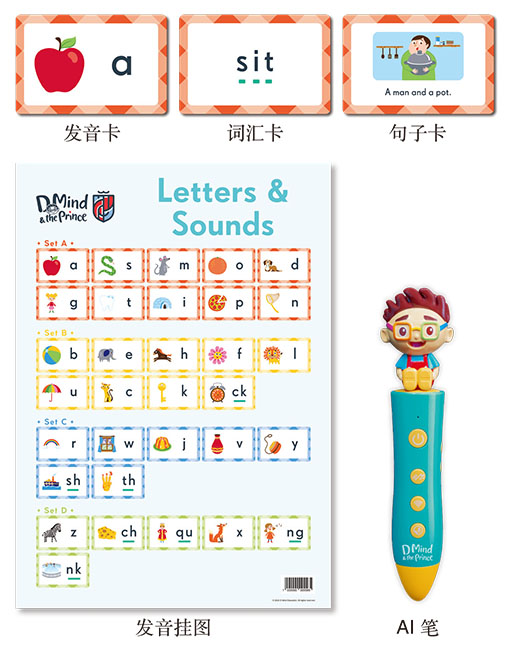
•
首先，孩子利用AI笔触点发音卡或挂图上的字母，聆听每个字母的发音，然后仿读。请家长按照组合所示次序教导孩子，并提醒他们，读字母的发音而不是字母本身，即“a”要读成apple中的 a，而不是ay。
•
孩子学会组合第一组发音（a, s, m, o, d, g, t, i, p, n）后，便可协助他们组合发音读出词汇。
•
当孩子能将发音组合成词汇，便开始读句子，图片有助于他们理解句子意思。
与孩子一起读第一组的发音
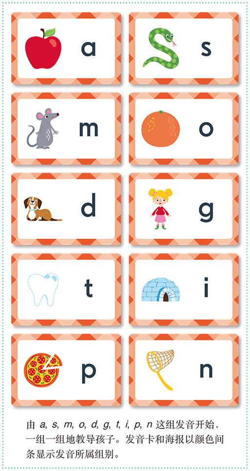
使用发音卡及海报
家长可指着发音卡或挂图的“m”，然后合紧双唇发出mmmmmm音，或以AI笔逐一触点字母发音，引导孩子专心聆听及仿读。
发出mmmmmm，然后告诉孩子图片中的是mouse，再读出mmmmmmouse。
组合发音
孩子掌握第一组发音（
a, s, m, o, d, g, t, i, p, n），而且不论顺序与否都能迅速读出来时，表示他们已能将发音组合并读出词汇。
以下为发音组合活动的步骤指示︰当孩子能以任何次序快速读出组内字母的发音时，可按下列步骤所示的发音组合进行练习，至完成所有分组。家长可利用AI笔触点卡或挂图上的点或线便可聆听各个发音，触点词汇便可聆听整个词汇的读音。
学习组合发音需要时间，即使孩子未能马上掌握也无须担心，继续教孩子下一组发音便可。
当孩子能够组合所有分组的发音，代表他们已掌握拼读的技巧！
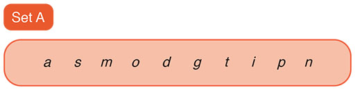
步骤 1 以口读方式组合发音（不使用词汇卡）
and, on, sit, spit, got, it, did, in, stop, pants, sad, pat, man, tip, sat, sand, pig, at
家长示范读出如下的发音和词汇，请孩子观察发音时嘴巴的形状：
•
以夸张的形式读出发音，如 a-n-d，请孩子跟着做。
•
先读出发音，再发全字读音，如 a-n-d, and，请孩子跟着做。
•
以夸张的形式读出发音和词汇，并重复数次。有需要可解释词汇的意思。
步骤 2 以词汇卡组合发音
•
重温发音
a s m o d g t i p n
•
确定孩子能迅速读出发音。
•
请孩子指着发音并读出词汇。
•
and, on, sit, spit, got, it, did, in, stop, pants, sad, pat, man, tip, sat, sand, pig 和 at 都是孩子掌握 Set A 的发音后能够读的词汇。
•
请孩子说出发音和朗读词汇（无须协助下完成）。
•
以夸张的发音重复朗读词汇，并请孩子跟着做。
•
如有需要，可利用AI笔触点卡上的点收听发音，或触点词汇收听全字读音。
步骤 3 阅读句子
•
当孩子能读出上列发音和发音组成的词汇时，便有能力读出一些简单句子。例如：
1. A man sits on a pig.
2. Dad is sad.
3. A man and a pot.
4. A dog sat on a mat.
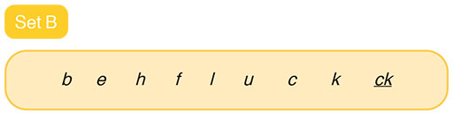
步骤 1 与孩子一起读
Set B 的发音
•
重温发音：
a s m o d g t i p n b e h f l u c k ck
•
读出挂图上字母的发音。
•
确定孩子能迅速读出这些发音。
•
教导孩子以组合发音的方式练习这些词汇：
bat, bag, sun, had, men, Jack, mend, up, lift, neck, let, has, lot, Mum, help, tuck, can, bit, big, get, bib, lap, slump, lick, hand, bed, hot, sick, must, ask, ten, fast, dock, clock, bus, stuck, black, had, his, duck
•
教导孩子认识有时两个字母连在一起代表一个发音，例如，上面划有底线的字母为二合字母，是一个单音。
步骤 2 阅读句子
•
当孩子能读出上列发音和发音组成的词汇时，便有能力读一些简单句子。
1. A duck is on a bus.
2. Jack has a big bag.
3. A bat mends a bib.
4. Mum had a big black clock.
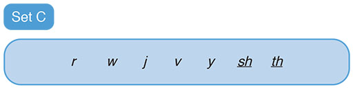
步骤 1 与孩子一起读
Set C 的发音
•
重温发音
a s m o d g t i p n b e h f l u c k ck r w j v y sh th
•
读出发音卡和挂图上字母的发音。
•
确定孩子能迅速读出这些发音。
•
教导孩子以组合发音的方式练习这些词汇：
wet, brush, rub, with, straps, trot, splash, fish, jump, ran, yes, went, shut, swish
•
划有底线的字母为二合字母，是一个单音。
步骤 2 阅读句子
•
当孩子能读出上列发音，又可读出发音组成的词汇时，便有能力读出一些简单句子。例如：
1. It is a wet brush.
2. Fish can swim and jump.
3. A cat trots with his mum.
4. A red bus and a van.
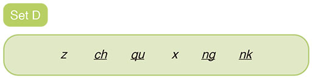
步骤 1 与孩子一起读
Set D 的发音
•
重温发音：
a s m o d g t i p n b e h f l u c k ck r w j v y sh th z ch qu x ng nk
•
读出发音卡或挂图上字母的发音。
•
确定孩子能迅速读出这些发音。
•
教导孩子以组合发音方式练习这些词汇：
chin, thanks, zip, bangs, much, drink, think, things, next, sing, six, ring, king, wink, blink, sang, quack
•
划有底线的字母为二合字母，是一个单音。
步骤 2 阅读句子
•
当孩子能读出上列发音，又可读出发音组成的词汇时，便有能力读一些简单句子
1. Dad sang with six kings.
2. Mum has six rings.
3. Jack has a hot drink.
4. A fox lifts its chin.
给父母的小提示
1.
利用 AI 笔学习发音。
2.
利用词汇卡帮助孩子学习组合发音，读出词汇。。
3.
即使只有十分钟时间，也要坚持每天一起阅读。
4.
多称赞，多鼓励，让孩子寓学习于娱乐。
父母的角色非常重要，孩子如果得到父母的鼓励和带领，学习起来事半功倍。不少简单的事情都可以在家进行，轻轻松松地帮助孩子建立良好的阅读能力。